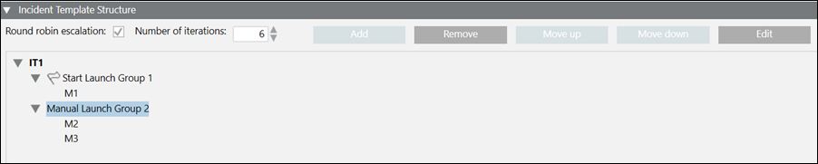

Incident Template Structure Expander
This expander allows to add or remove Launch Groups and notifications to the incident template.

- Round robin escalation (Available only for Reno Plus license users): Allows you to configure the recursive escalation of the notifications templates.
For example, you can configure M1 in M3 as the escalation template. If the rule is not satisfied, escalation will continue from M1. This process continues for specified number of iterations or until the event is acknowledged by the operator.
Also, M1 can be configured in M1 as self escalation template. - Number of Iterations: Select the number of iterations for round robin escalation. Minimum Iteration count for round robin escalation is zero and maximum is 99.
- Add: Adds a launch group to an incident template.
- Remove: Removes the selected launch group as well as the notification template from the incident template.
- Move up: Moves the selected notification in the upward direction.
- Move down: Moves the selected notification in the downward direction.
- Edit (For upgraded project) Allows you to edit the selected notification template (message template) or a launch group.
(For new projects) Allows you to edit only the recipients of a notification template. - Edit content (Available only for upgraded project) Allows to edit the contents of the notification template.
- Launch Group: View the whole incident template structure consisting of launch groups and added notification templates.